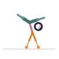

Side Crow Pose
Parsva Bakasana
How to
From a squat, twist the torso to one side, plant both hands beside the hip, and lean forward to lift the feet, balancing the hips on the upper arm.
Benefits
- Builds arm and core strength together with spinal rotation
- Improves balance and focus
- A twisting variation on the classic arm balance
Practice
Practice near a cushion while learning; hold for a few breaths per side.

Get the Asanas appFree, no ads, works offline
Google Play
General information, not medical advice. If you have a health condition or pain, talk to a doctor or qualified teacher first.